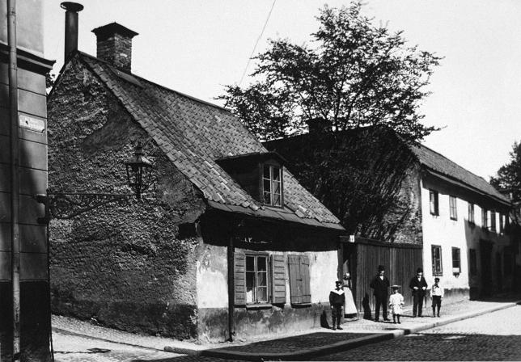
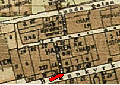
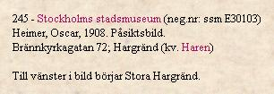
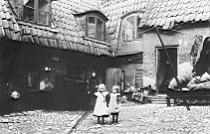
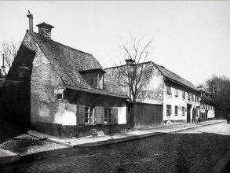
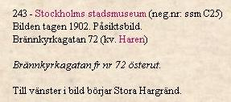
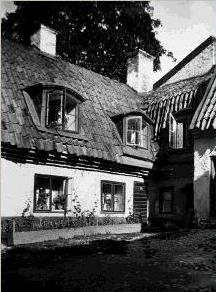
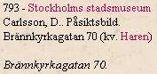

Södermalm i tid och rum. Stockholm





Gården till Brännkyrkagatan 70 i kvarteret
Haren större 7. Ägare änkefrun S W Unge.
Foto november 1904
|

  Nutid 2003 Nutid 2003
Social tidskrift, 1902 Om man gick nerför Stora Hargränd, vek av åt vänster på Brännkyrkagatan och passerade husen nr 72, 70 och 68 så kom man till Wicanders korkfabrik. Det var bara en av de många fabriker som med nakna tegelmurar fördystrade den trånga gatan. Arbetsstyrkan vid Wicanders bestod till stor del av fabriksarbeterskor, med löner som sällan kom över 700 kronor om året.
|
  Som grannar hade fabriken några gårdar från en svunnen hantverkartid. Det lär ha varit en järnbärare Andreas Ström som ursprungligen lät uppföra husen Brännkyrkagatan 68 och 70 - det var 1765. Några år tidigare hade då hörntomten till Stora Hargränd fått sitt hus, med en buldanvävargesäll Holm som byggherre. Genom åren byggdes husen till med vindsvåningar och torvtaken ersattes med tegeltak. År 1904 samsades totalt 55 personer i gården nr 70, och av dessa var 27 vuxna och 28 barn. I det lilla hörnhuset nr 72 var det däremot inte fullt så trångt, där var år 1908 mantalsskrivna: Snickaren Erik August Sundin (f 1844) med hustrun Katarina Josefina (f 1840). "Hyr verkstad och idkar yrket härstädes". Årshyra 300 kronor. Arsinkomst 800 kronor Arbetaren Johan August Melker Ström (f 1861) med hustrun Matilda (f 1851) och döttrarna Hedda (f 1892) och Tyra (f 1893). Anställd vid Södra murbruksfabriken. Årshyra 180 kronor. Årsinkomst 1 000 kronor |